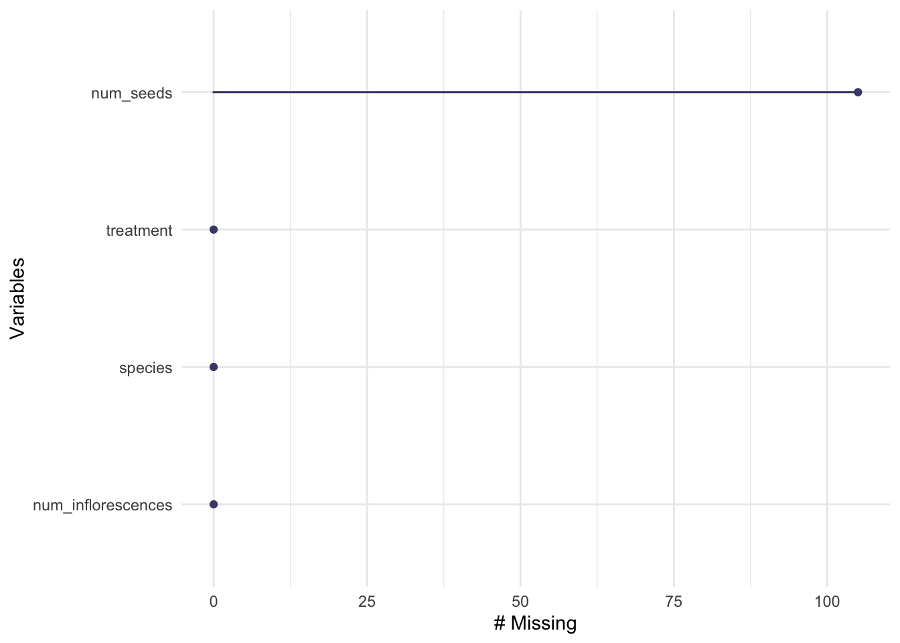

Code
library(here)
library(tidyverse)
library(utils)
library(readr)
library(janitor)
library(dplyr)
library(naniar)
library(ggplot2)
library(performance)
library(effsize)
library(rstatix)
library(flextable)library(here)
library(tidyverse)
library(utils)
library(readr)
library(janitor)
library(dplyr)
library(naniar)
library(ggplot2)
library(performance)
library(effsize)
library(rstatix)
library(flextable)Initial data wangling:
# reading in the data
kratseed <- read.csv("~/github/ENVS-193DS_final/data/knb-lter-sev.208.102459/sev208_kratseedbank_20120213.txt")
# creating a new object of all columns, but excluding the microhabitat composition rows which are in percentages in the seed count column
seed_data <- kratseed[!kratseed$species %in% c("soil", "dist", "gravel", "litter", "plant"), ] %>%
# making the column names cleaner
clean_names() %>%
# renaming columns
rename(c("location" = "loc", "seed_count" = "seeds")) %>%
# selecting the columns of interest by removing `mnd`,`dir` and `species`
mutate(species = NULL, dir = NULL, mnd = NULL) %>%
# renaming locations
mutate(location = case_when(
location == "B" ~ "Base",
location == "D" ~ "Surrounding",
location == "E" ~ "Edge",
location == "I" ~ "Inter_Space"))Visualizing missing data:
# visualizing missing data
gg_miss_var(seed_data) +
labs(title = "Missing Data Visualization of Mound Locations and Seed Count",
caption = "Visualization shows no missing data for mound locations nor seed counts") +
theme(plot.title = element_text(size = 10, hjust = 0.5)) +
theme(plot.caption = element_text(size = 9, hjust=0.5))
Exploratory Visualization:
# plotting an exploratory visualization
ggplot(data = seed_data, aes(x = location, y = seed_count)) +
geom_jitter() +
labs(title = "Exploratory Visualization of Seed Count Across Mound Locations ",
caption = "Visualization shows the highest seed count
at the base of the mound and decreasing count further
from the mound") +
theme(plot.title = element_text(size = 10, hjust = 0.5)) +
theme(plot.caption = element_text(size = 8, hjust=0.5))
Visually checking for normality of variables and distribution with a histogram and QQ Plot:
# checking histogram for independence of variables and spread
histogram_kseed <- ggplot(data = seed_data, aes(x = seed_count)) +
geom_histogram(bins = 20) +
labs(x = "Seed Count", y = "Count") +
theme_bw()
histogram_kseed
# checking qq plot for normality
ggplot(data = seed_data) +
stat_qq(aes(sample = seed_count)) +
stat_qq_line(aes(sample = seed_count), color = "orange") +
facet_wrap(~ location)
Using the Shapiro Wilk test to check for normal distribution:
# The p-value of the Shapiro-Wilk Test is greater than 0.05. Meaning the data significantly deviates from a normal distribution.
shapiro.test(seed_data$seed_count)
Shapiro-Wilk normality test
data: seed_data$seed_count
W = 0.23462, p-value < 2.2e-16The QQ plot shows that the sample distribution is not linear or normally spread. The histogram visualization shows that the distribution of the seed count data is not normally distributed. And the Shapiro-Wilk test (p-value = 2.2e-16) shows that the data deviates from a normal distribution as well (p-value < 0.05). Therefore, a non-parametric alternative to a one-way ANOVA (Kruskal-Wallis test) is performed to compare the seed counts between rat mound locations.
Kruskal-Wallis Test and table:
# creating a new object for the Kruskal-Wallis Test
kruskal_test <- kruskal.test(seed_count ~ location, data = seed_data)
# creating a readable table of the test results
kruskal_test_table <- tidy(kruskal_test) %>%
mutate(statistic = round(statistic, digits = 3)) %>%
mutate(p.value = round(p.value, digits = 4)) %>%
flextable() %>%
autofit()
kruskal_test_tablestatistic | p.value | parameter | method |
|---|---|---|---|
14.438 | 0.0024 | 3 | Kruskal-Wallis rank sum test |
From the Kruskal-Wallis test, we can conclude that there are significant differences between the treatment groups because the p-value is less than the significance value of 0.05 (p-value = 0.0024). Multiple pairwise comparisons between groups were conducted and we know there is a substantial difference between groups based on the Kruskal-Wallis test’s results, but we don’t know which pairings of groups are different. The function pairwise.wilcox.test() can be used to calculate pairwise comparisons between group levels with different testing corrections.
Pairwise-Wilcox Test and table:
# running poct hoc test to calculate pairwise comparisons between locations using `pairwise.wilcox.test`
pairwise_test <- pairwise.wilcox.test(seed_data$seed_count, seed_data$location)
# creating a readable table of the test results
wilcox_table <- tidy(pairwise_test) %>%
#clean up table
mutate(p.value = round(p.value, digits = 4)) %>%
flextable() %>%
autofit()
wilcox_tablegroup1 | group2 | p.value |
|---|---|---|
Edge | Base | 0.4041 |
Inter_Space | Base | 0.0018 |
Inter_Space | Edge | 0.0551 |
Surrounding | Base | 0.5682 |
Surrounding | Edge | 0.6479 |
Surrounding | Inter_Space | 0.0453 |
The results of the Pairwise Wilcox Test show that not all of the mound locations significantly differ in seed counts, but that the Inter-Space of the mound has a significant difference in seed count between the Base of the mound (p.value = 0.0018), and the Surrounding of the mound (p.value = 0.0453) but has does not show a significant difference in seed counts with the Edge of the mounds (p.value = 0.0551).
Final Visualization of total seed count by Kangaroo Rat mound location:
# creating a new object for the sum of seed counts per location
totalseedcount <- aggregate(data = seed_data, seed_count ~ location, FUN = sum)
totalseedcount location seed_count
1 Base 6662
2 Edge 1012
3 Inter_Space 377
4 Surrounding 2607# creating a figure of the total seed count data
ggplot(data = totalseedcount, aes(x = location, y = seed_count, fill = location)) +
# creating a column figure
geom_col() +
# adding labels
labs(x = "Kangaroo Rat Mound Locations",
y = "Total Seed Count",
caption = "Total of seed counts per Kangaroo rat mound locations.
Data source: Koontz and Simpson (2010), The composition of seed banks
on kangaroo rat (Dipodomys spectabilis) mounds in a Chihuahuan Desert grassland",
title = "Total Seed Count for Each Kangaroo Rat Mound Locations", color = "location") +
theme_classic() +
# choosing different colors for each location
scale_fill_manual(values = c("lightgreen", "lightpink", "lightgrey", "lightblue")) +
# adjusting/edits
theme(
legend.position = c(0.85, 0.7),
legend.text = element_text(size = 11),
legend.title = element_text(size = 11),
# clear background
panel.grid = element_blank(),
# font, position, and sizes of lables
axis.text = element_text(size = 7),
axis.title = element_text(size = 9),
plot.title = element_text(size = 12, hjust = 0.5),
plot.caption = element_text(size = 7, hjust = 0.5))# model packages
library(MASS)
library(lme4)
library(glmmTMB)
# diagnostics and model info
library(DHARMa)
library(MuMIn)
library(ggeffects)
library(lmtest)
library(broom)
# general usage
library(tidyverse)
library(skimr)
library(GGally)
library(flextable)# reading in seed counts data
seeds <- read_csv(here("data", "knb-lter-nwt.297.1", "shrubstudy_seed_ctwt.ms.data.csv")) %>%
# select the columns of interest
dplyr::select(treatment, species, total_nr_infl, nr_seeds) %>%
# change variable names to be more descriptive
mutate(treatment = case_when(
treatment == "control" ~ "open",
treatment == "shrub" ~ "shrub")) %>%
# rename columns for readability
rename("num_inflorescences" = total_nr_infl, "num_seeds" = nr_seeds)gg_miss_var(seeds)
Figure 1. Number of missing values from the seeds data frame.
Subsetting the data by dropping NAs:
Since I took this data set from online, I do not know why there are NA values so for the purpose of this analysis, I will exclude them.
seeds_subset <- seeds %>%
# drops rows with NA values in the num_seeds column
drop_na(num_seeds)seeds_subset %>%
# select variables to include in plot
dplyr::select(treatment:num_inflorescences) %>%
# create pairs plot
ggpairs()
ggplot(data = seeds_subset, aes(x = num_seeds)) +
geom_histogram(bins = round(2*nrow(seeds_subset)^(1/3)),
fill="#45B39D",
color = "#e9ecef") +
labs(x = "Number of Seeds", y = "Count",
title = "Histogram of Number of Seeds")
Build generalized linear models (GLM)
We are using a linear regression model because we are dealing with discrete (count) data.
# GLM with all predictor variables (Poisson)
model1 <- glm(num_seeds ~ treatment + species + num_inflorescences, data = seeds_subset, family = "poisson")
# GLM with treatment as predictor variable (Poisson)
model2 <- glm(num_seeds ~ treatment, data = seeds_subset, family = "poisson")
# GLM with species as predictor variable (Poisson)
model3 <- glm(num_seeds ~ species, data = seeds_subset, family = "poisson")
# GLM with treatment and species as predictor variables (Poisson)
model4 <- glm(num_seeds ~ treatment + species, data = seeds_subset, family = "poisson")
# GLM with treatment and number of inflorescences as predictor variables (Poisson)
model5 <- glm(num_seeds ~ treatment + num_inflorescences, data = seeds_subset, family = "poisson")
# GLM with species and number of inflorescences as predictor variables (Poisson)
model6 <- glm(num_seeds ~ treatment + num_inflorescences, data = seeds_subset, family = "poisson")
# GLM with all predictor variables (negative binomial)
model7 <- glm.nb(num_seeds ~ treatment + species + num_inflorescences, data = seeds_subset)
# GLM with treatment as predictor variable (negative binomial)
model8 <- glm.nb(num_seeds ~ treatment, data = seeds_subset)
# GLM with species as predictor variable (negative binomial)
model9 <- glm.nb(num_seeds ~ species, data = seeds_subset)
# GLM with number of inflorescences as predictor variable (negative binomial)
model10 <- glm.nb(num_seeds ~ num_inflorescences, data = seeds_subset)
# GLM with treatment and species as predictor variables (negative binomial)
model11 <- glm.nb(num_seeds ~ treatment + species, data = seeds_subset)
# GLM with treatment and number of inflorescences as predictor variables (negative binomial)
model12 <- glm.nb(num_seeds ~ treatment + num_inflorescences, data = seeds_subset)
# GLM with species and number of inflorescences as predictor variables (negative binomial)
model13 <- glm.nb(num_seeds ~ species + num_inflorescences, data = seeds_subset)# check diagnostics
plot(simulateResiduals(model1)) # badplot(simulateResiduals(model2)) # badplot(simulateResiduals(model3)) # badplot(simulateResiduals(model4)) # badplot(simulateResiduals(model5)) # badplot(simulateResiduals(model6)) # bad
plot(simulateResiduals(model7)) # badplot(simulateResiduals(model8)) # badplot(simulateResiduals(model9)) # okplot(simulateResiduals(model10)) # bad
plot(simulateResiduals(model11)) # ok
plot(simulateResiduals(model12)) # badplot(simulateResiduals(model13)) # bad# Note for Sundeep: I chose these models to compare because model1 and model7 answers the question for problem 2 but not sure if these should be included because they don't meet assumptions of GLM..
# Also, I included model9 and model11 because these meet the assumptions
MuMIn::model.sel(model1, model7, model9, model11)Model selection table
(Int) num_inf spc trt family class init.theta link df logLik
model7 1.918 0.07499 + + NB(1.5049,l) negbin 1.5 log 9 -556.455
model11 3.706 + + NB(0.7556,l) negbin 0.756 log 8 -603.151
model9 3.592 + NB(0.7385,l) negbin 0.738 log 7 -604.827
model1 2.549 0.02989 + + p(l) glm 8 -1150.107
AICc delta weight
model7 1132.0 0.00 1
model11 1223.1 91.18 0
model9 1224.3 92.34 0
model1 2317.0 1185.09 0
Abbreviations:
family: NB(0.7385,l) = 'Negative Binomial(0.7385,log)',
NB(0.7556,l) = 'Negative Binomial(0.7556,log)',
NB(1.5049,l) = 'Negative Binomial(1.5049,log)', p(l) = 'poisson(log)'
Models ranked by AICc(x) # results: model7 has lowest AIC but since it doesn't meet assumptions, I would say we also look at model11? I will include both because model7 answers the question for prob 2 and model11 meets assumptions# model summaries
summary(model7)
Call:
glm.nb(formula = num_seeds ~ treatment + species + num_inflorescences,
data = seeds_subset, init.theta = 1.504930235, link = log)
Deviance Residuals:
Min 1Q Median 3Q Max
-3.4884 -0.9516 -0.2062 0.3100 2.7942
Coefficients:
Estimate Std. Error z value Pr(>|z|)
(Intercept) 1.91762 0.22214 8.633 < 2e-16 ***
treatmentshrub -0.34744 0.14433 -2.407 0.0161 *
speciesCARRUP -1.56758 0.29371 -5.337 9.44e-08 ***
speciesGEUROS -0.17847 0.25235 -0.707 0.4794
speciesKOBMYO 0.19845 0.22373 0.887 0.3751
speciesMINOBT -0.36228 0.23755 -1.525 0.1272
speciesTRIDAS 1.74077 0.85712 2.031 0.0423 *
num_inflorescences 0.07499 0.00559 13.416 < 2e-16 ***
---
Signif. codes: 0 '***' 0.001 '**' 0.01 '*' 0.05 '.' 0.1 ' ' 1
(Dispersion parameter for Negative Binomial(1.5049) family taken to be 1)
Null deviance: 543.44 on 181 degrees of freedom
Residual deviance: 213.68 on 174 degrees of freedom
AIC: 1130.9
Number of Fisher Scoring iterations: 1
Theta: 1.505
Std. Err.: 0.212
2 x log-likelihood: -1112.910 summary(model11)
Call:
glm.nb(formula = num_seeds ~ treatment + species, data = seeds_subset,
init.theta = 0.7555861374, link = log)
Deviance Residuals:
Min 1Q Median 3Q Max
-2.3518 -1.1203 -0.3413 0.1850 3.0659
Coefficients:
Estimate Std. Error z value Pr(>|z|)
(Intercept) 3.7064 0.2556 14.498 < 2e-16 ***
treatmentshrub -0.3528 0.1901 -1.856 0.06352 .
speciesCARRUP -3.2736 0.3487 -9.389 < 2e-16 ***
speciesGEUROS -1.8171 0.3082 -5.895 3.75e-09 ***
speciesKOBMYO -0.6193 0.2930 -2.114 0.03452 *
speciesMINOBT -0.8756 0.3067 -2.855 0.00431 **
speciesTRIDAS 0.2573 1.1900 0.216 0.82879
---
Signif. codes: 0 '***' 0.001 '**' 0.01 '*' 0.05 '.' 0.1 ' ' 1
(Dispersion parameter for Negative Binomial(0.7556) family taken to be 1)
Null deviance: 314.46 on 181 degrees of freedom
Residual deviance: 206.88 on 175 degrees of freedom
AIC: 1222.3
Number of Fisher Scoring iterations: 1
Theta: 0.7556
Std. Err.: 0.0872
2 x log-likelihood: -1206.3020 # confidence intervals
confint(model7) 2.5 % 97.5 %
(Intercept) 1.48135091 2.37173652
treatmentshrub -0.62574220 -0.06685413
speciesCARRUP -2.15660520 -0.98976040
speciesGEUROS -0.68625088 0.32088265
speciesKOBMYO -0.24125179 0.62418151
speciesMINOBT -0.82158807 0.08813708
speciesTRIDAS 0.34320597 3.95113117
num_inflorescences 0.05879443 0.09257054confint(model11) 2.5 % 97.5 %
(Intercept) 3.2527339 4.22656892
treatmentshrub -0.7225292 0.02288965
speciesCARRUP -3.9625480 -2.60549229
speciesGEUROS -2.4379210 -1.22225041
speciesKOBMYO -1.2118519 -0.06147120
speciesMINOBT -1.4965401 -0.27850378
speciesTRIDAS -1.5367074 3.80558289# adjusted R2 values
r.squaredGLMM(model7) R2m R2c
delta 0.6826312 0.6826312
lognormal 0.7414369 0.7414369
trigamma 0.5975110 0.5975110r.squaredGLMM(model11) R2m R2c
delta 0.4477142 0.4477142
lognormal 0.5640701 0.5640701
trigamma 0.2932060 0.2932060# report model object results in table
table <- tidy(model7, conf.int = TRUE) %>%
# change the estimates, standard error, t-stats to round to 2 digits
mutate(across(estimate:conf.high, ~ round(.x, digits = 2))) %>%
# replace the small p values with < 0.001
mutate(p.value = case_when(p.value < 0.001 ~ "< 0.001")) %>%
# make it into flex table
flextable() %>%
# change header labels
set_header_labels(std.error = "standard error",
statistic = "F-statistic",
p.value = "p-value",
conf.low = "low confidence interval",
conf.high = "high confidence interval")
# fit it to the viewer
autofit(table)term | estimate | standard error | F-statistic | p-value | low confidence interval | high confidence interval |
|---|---|---|---|---|---|---|
(Intercept) | 1.92 | 0.22 | 8.63 | < 0.001 | 1.48 | 2.37 |
treatmentshrub | -0.35 | 0.14 | -2.41 | -0.63 | -0.07 | |
speciesCARRUP | -1.57 | 0.29 | -5.34 | < 0.001 | -2.16 | -0.99 |
speciesGEUROS | -0.18 | 0.25 | -0.71 | -0.69 | 0.32 | |
speciesKOBMYO | 0.20 | 0.22 | 0.89 | -0.24 | 0.62 | |
speciesMINOBT | -0.36 | 0.24 | -1.53 | -0.82 | 0.09 | |
speciesTRIDAS | 1.74 | 0.86 | 2.03 | 0.34 | 3.95 | |
num_inflorescences | 0.07 | 0.01 | 13.42 | < 0.001 | 0.06 | 0.09 |
# visualization for model 7
ggplot(data = model7, aes(x = species, y = num_seeds, fill = treatment)) +
geom_point(aes(color = treatment)) +
facet_wrap(~species, scales = "free_y") +
labs(x = "Species",
y = "Seed Count",
title = "Number of Seeds vs Plant Species and Plot Type
(Open or Shrub)") +
theme_gray() +
theme(
# font, position, and sizes of labels
axis.text = element_text(size = 7),
axis.title = element_text(size = 9),
plot.title = element_text(size = 12, hjust = 0.5),
plot.caption = element_text(size = 7, hjust = 0.5))
# visualization for model 11
ggplot(data = model11, aes(x = species, y = num_seeds, fill = treatment)) +
geom_boxplot() +
labs(x = "Species",
y = "Seed Count",
title = "Number of Seeds vs Plant Species and Plot Type (Open or Shrub)") +
theme_gray() +
theme(
# font, position, and sizes of labels
axis.title = element_text(size = 9),
plot.title = element_text(size = 12, hjust = 0.5),
plot.caption = element_text(size = 7, hjust = 0.5))